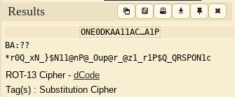

BATxAPU Internal CTF 2022
The contents of this post were originally written in July 2022. This was my first physical CTF that I attended with my friends. Somehow we placed 7th. Everything below this blockquote is from the original post.This was an internal ctf that took place in my university, it was sponsored by the British American Tobacco association (BAT) which is crazy to me. Do hackers like smoking a lot or something?
⇢ My brain can't handle this [100pts]
For this challenge, we are given a .txt file called "giberish.txt". Let's open it up and see what's inside!
8+3sLvWcsa+tTbcpa52++G1fp0cN7[+3vMk46Dv9+c+83R2CjGcn+>56bTsPcAqMbC--02CbgWHfca5-<8JdAeQIc]>wCnbWAnttsf16-.ESbhdawkuB541vh3VC-3386dcO.1H5C2c6c2nmcDF>oCwAsdeNCdaOPc-[WamFhs5B38g-w75-8vwPc->e93GvB+<3CadOPcw]>7Gcd4GlM-.6dK4IQs>-5GcShj[4wGHvDa23cNgC---8AscJr4C21--lL3CaA>9+7<\NcAsdN]>Mp2CsKclo-.61C2vgaDb.-itCweTaNc[--tTaSCjUY--5Scb1w03->McE2IpDca+W+Dh<67]>oaChMct+7.AsLpa6NBcy-9-0-0-hcxW.aD19-[0pLCaWf-6NmcFvK-333Kc1dYD-9HdWplD>++DvAw++2DkC<\LLiecn]>wCut3cemNc.-1OcAwbwamj-a-8iCasnE[3Swplcjawhg->jITHjvgi98aw2FJSAWDKJ+3+vvnjaw5+JNks+whrgsw+WADhsjy<]JBfykjsaawdyhgnfgb>.4frgs2dsfgEWGuk+waf+piug+AWDdf+512+asdGESg+%#vHJRE.3-fEa[-SAEG>++DHT12CAasdh5asf++Avcag3+GEs+12VGE<9CAW]>+8g3314v.iCPldfLc--pTTwcU--Ycaw-TT.[-74HHfrf7>+awbRr+<\RFdjQQsfP]>-CCw24HauruU.-WAh8721TREfaw66--ffD---9h.ca45haWeUcTpLc4FC62>FGc2kj-[dWyUkjcaW-3T-99oCw0gfHpCWf---wW7>9d+c8M<\TUc]rK>.75VC[w-kFwyr46FaDheJfg4H0>+78VekjSk+<3cHR]>-.$2-54BeavJ^5V--WA4$6-c12kjNT&%-V315%&^$%cWA13-#$-1VC32!%@^b543--V43244--H%$.[YUc32^-F#-C-#>*f32@#%vc+rth%YF++34@%+<]GHwafTY^>++GJWYRV^!f3b432df.--()h42vF#TYdsf3[-CJRcvgW>#^+FRpffc#@%^@^&*veeaw@fhjSJed++G$++<]>+.nequE>-po$Frro-[-fuGit1->iure2175634+5+091+vc33<]t3>mnaw%#vc.
Well, that definitely is 'giberish.txt'. Alright, so at first this seems indecipherable, but in many ctfs, the name of the challenge can help a lot. 'My brain can't handle this' reminds me of an esoteric programming language by the name of Brainf**k (I can use swear words in my own webpage, right? It's just the name of the language..). Anyways, this language comes up a lot in ctfs, and its easily recognizable because of its use of + and -. If you see a lot of + and - in a challenge, your brain should immediately explode because it's uh, getting f***ed.
NOTE: there are characters other than + and - in brainf**k, those 2 are just the most recognizable.
Ok so in our file there are actually a lot of + and -'s, so this is probably brainf**k! But in between are a bunch of other characters that we don't need. Of course we could just manually remove those one by one, but we want to look cool and nerdy, so let's write a python script to remove it for us! It doesn't have to be super optimized or anything, so just whip up anything that works.
Looking on the brainf**k wikipedia article, brainf**k uses "+", "-", "<", ">", ".", ","(comma), "[", and "]". So based on this let's write our script!
text = open("giberish.txt")
flag =""
brain = ["+", "-", ".", ",", "[", "]", "<", ">"]
for char in text:
if char in brain:
flag += char
else:
continue
print(flag)
EXPLANATION: The script first opens the 'giberish.txt' file. A 'flag' variable is created to store our flag, and a list called 'brain' is created which contains the list of characters used in brainf\*\*k. We create a for loop that looks through each character in the file. If the character is in the 'brain' list, it is added to the flag variable. If not, the loop continues. After looking through the entire file, the flag is printed.
Now let's save this script as 'brain.py' and check the results!$ python3 brain.py
++++[++++>---<]>-.-.>-[--->+<]>-.>-[----->+<]>-..-[----->++<]>+.----.-[--->++++<]>.---[->+++++<]>.++++++.-[->++++++<]>+.-----.[->++<]>-.------.>-[----->+<]>.[->++<]>-.-----------.[--->++++<]>++.--[->+++++<]>+.>--[-->+++<]>.
So that's our brainf**k code! Let's run it through an online decoder to get our flag!

⇢ Dead [100pts]
For this challenge we were just given an ominous description without a file. Luckily for us, we know that the title and description of a challenge can help a lot! First, I googled 'dead cipher', but got nothing. Then I looked closer at the description. "To rot on your own...". It finally clicked that we were looking at a ROT cipher, or a rotation cipher.
The way a ROT cipher works is that it shifts characters forward to encode it. So for example, if I wanted to encode the word "WOWIEE" using ROT13 (shifting 13 characters, I would get "JBJVRR". And luckily for us, the first 4 letters of the weird text from our ominous description looked very much like the start of our flag format (BAT22) so hooray! This is definitely a rot cipher.
However, the challenge isn't that simple, as simply converting the whole string with rot13 gives us this:
Uh, what the heck is wrong with this thing? Looks like our guess was only half correct. I didn't manage to finish this challenge during the ctf, but after it ended one of the challenge creators told me I needed to use ROT47 as well. ROT47 is what its name implies; shift forward 47, but it also includes *more ascii characters.*
^^This should have tipped me off the first time I saw it. ROT13 only uses alphabets, so as soon as I saw the other symbols in the string (@, \*, $) I should have recognized it as ROT47. Don't make the same mistake I did!
So now we know we have to use both ROT13 and ROT47. But converting back and forth is tiresome, so let's use a different decoder for this challenge. A valuable resource for all you crypto nerds is CyberChef. It allows us to create 'recipies' by mixing different ciphers, so it would be perfect for this challenge.
After messing around a bit in cyberchef, if we decode in the order of ROT47/ROT13/ROT47/ROT13 we'll finally get this result!: